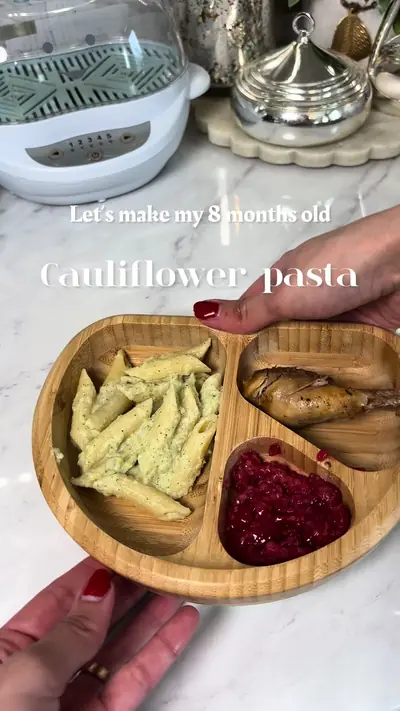

Cauliflower pasta lunch for my 8 months old baby led weaning

Ingredients
- butter
- 2 tablespoons onion
- 1 teaspoon garlic
- cauliflower
- broccoli
- water
- chicken
- broth
- 2 tablespoon heavy cream
- pasta
- raspberries
Steps
- It has been helping me a lot whenever I find a video I want to try I use recipe and it will import the recipe for me with all the ingredients I need and all the steps I can also organize the recipes I have baby lead weaning and purees and the cool part is I can tap from recipe and it will take me to the Video I saved going back to today's recipe You're gonna add some butter, 2 tablespoons onion, 1 teaspoon garlic, cauliflower and broccoli So taste and add water or chicken broth if you want.
- I added some bone marrow instead cover and let it cook We're gonna boil some pasta.
- You can do whatever works for you Once it's cooked add 2 tablespoon heavy cream and mix blend everything to this texture and mix with the pasta For this lunch we have pasta, grains, vegetables and for protein I'm adding a chicken drumstick that I made last night and raspberries as fruits If you're offering chicken drumstick make sure you remove the skin and any other sharp bones My son really enjoyed the drumstick He's becoming so good at chewing if you're offering the drumstick for the first time I highly recommend you do only the bone and then when they get used to it You can do full drumstick without the skin
From the video's narration and on-screen text, by @soniamazri on TikTok. Open original